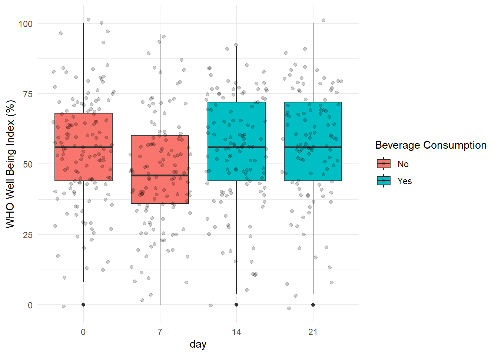
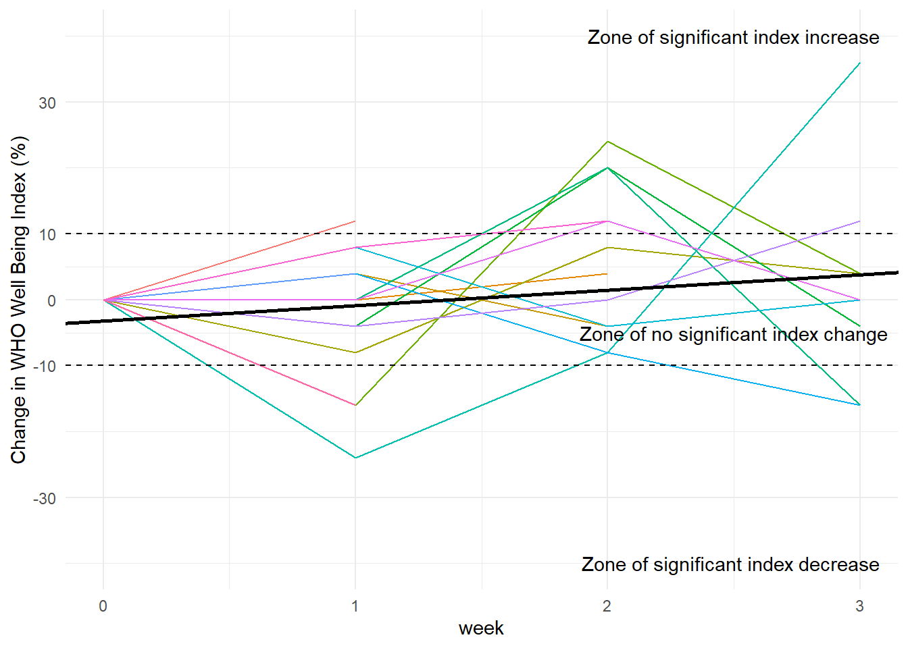

# A tibble: 6 × 6
id day Battery question Value Text
<dbl> <dbl> <chr> <chr> <dbl> <chr>
1 13 0 Beverage Enrollment birth_year 35 1973
2 13 0 Beverage Enrollment Enrollment_Gender 2 Female
3 13 0 Beverage Enrollment who_1 4 Most of the time
4 13 0 Beverage Enrollment who_2 4 Most of the time
5 13 0 Beverage Enrollment who_3 4 Most of the time
6 13 0 Beverage Enrollment who_4 4 Most of the time
Let’s analyze the question of alcohol consumption before and while consuming the product.
#Changed 1 and 0 instead of 2 and 1 for "no" and "yes" answers respectively,# bev is the Battery, coded 1 for Beverage Daily and 0 otherwise.daily_alc <- data %>%drop_na() %>%filter(question =="daily_alc") %>%mutate(Value =ifelse(Value ==2, 1, 0),bev =as_factor(ifelse(Battery =="Beverage Daily", 1, 0)) )daily_alc_stats <- daily_alc %>%group_by(Battery) %>%get_summary_stats(Value, show =c("n", "mean", "sd", "se", "ci"))kable(daily_alc_stats, caption ="Metrics of 'no' answers during and pre beverage")
Metrics of ‘no’ answers during and pre beverage
Battery
variable
n
mean
sd
se
ci
Beverage Daily
Value
1462
0.843
0.364
0.010
0.019
Pre Beverage Daily
Value
801
0.784
0.412
0.015
0.029
The proportion of “no” answers during beverage is 6% higher than the proportion of “no” answers when pre beverage. The difference is statistically signifcant because of no overlapping 95% confidence intervals.
In the next plot, the proportion of “no” answers per individual is depicted.
# Let's see if the difference of 'no' answers for both groups is statistically significantt.test(b$`Beverage Daily`, b$`Pre Beverage Daily`, paired =TRUE)
Paired t-test
data: b$`Beverage Daily` and b$`Pre Beverage Daily`
t = 4, df = 140, p-value = 7e-05
alternative hypothesis: true mean difference is not equal to 0
95 percent confidence interval:
0.0354 0.1019
sample estimates:
mean difference
0.0687
The difference between the proportions of ‘no’ answers of both groups is statistically significant.
Modeling
Do this increase in the proportion of no alcohol consumers has something to do with the consumption of the beverage? If so, we should see an increase in the chances of not drinking alcohol from the day on which the beverage is consumed. To do that, we will use a generalized mixed effects linear model because it is best adapted when the outcome we want to predict is binary.
Generalized linear mixed model fit by maximum likelihood (Laplace
Approximation) [glmerMod]
Family: binomial ( logit )
Formula: factor(Value) ~ day + (1 | id)
Data: daily_alc
AIC BIC logLik -2*log(L) df.resid
1729 1746 -861 1723 2260
Scaled residuals:
Min 1Q Median 3Q Max
-4.879 0.128 0.176 0.405 1.859
Random effects:
Groups Name Variance Std.Dev.
id (Intercept) 3.59 1.9
Number of obs: 2263, groups: id, 142
Fixed effects:
Estimate Std. Error z value Pr(>|z|)
(Intercept) 1.9598 0.2290 8.56 < 2e-16 ***
day 0.0465 0.0113 4.12 3.8e-05 ***
---
Signif. codes: 0 '***' 0.001 '**' 0.01 '*' 0.05 '.' 0.1 ' ' 1
Correlation of Fixed Effects:
(Intr)
day -0.431
We can see from the random effects that there is variability in the baseline and that there is a statistically significant increase of 5% per day in the chances of not consuming alcohol. However, this model considers every day as equal, but, if the beverage is truly working, the days when individuals are on beverage must have more weight. So, let’s try adding an interaction term.
model2 <- lme4::glmer(factor(Value) ~ day + day * bev + (1| id),na.action = na.omit,family =binomial(link ="logit"),data = daily_alc)summary(model2)
Generalized linear mixed model fit by maximum likelihood (Laplace
Approximation) [glmerMod]
Family: binomial ( logit )
Formula: factor(Value) ~ day + day * bev + (1 | id)
Data: daily_alc
AIC BIC logLik -2*log(L) df.resid
1728 1756 -859 1718 2258
Scaled residuals:
Min 1Q Median 3Q Max
-4.530 0.131 0.181 0.402 2.049
Random effects:
Groups Name Variance Std.Dev.
id (Intercept) 3.63 1.91
Number of obs: 2263, groups: id, 142
Fixed effects:
Estimate Std. Error z value Pr(>|z|)
(Intercept) 1.6341 0.2983 5.48 4.3e-08 ***
day 0.1262 0.0611 2.07 0.039 *
bev1 0.8766 0.3895 2.25 0.024 *
day:bev1 -0.1166 0.0649 -1.80 0.072 .
---
Signif. codes: 0 '***' 0.001 '**' 0.01 '*' 0.05 '.' 0.1 ' ' 1
Correlation of Fixed Effects:
(Intr) day bev1
day -0.678
bev1 -0.445 0.532
day:bev1 0.639 -0.941 -0.761
This model catches an effect produced by the beverage condition that is statistically significant. The interaction term has a lower level of significance.
When we compare both models, the model 2 performs better in most metrics than model 1.
Prediction of Probability of not consuming alcohol during the study
In this section, we will predict the probability of not consuming alcohol during the time of the study (0 to 21 days).
#set with the 0 to 21 daysdataset <-with(daily_alc, tibble(day =c(0:21), bev =as_factor(c(0, 0, 0, 0, 0, 0, 0,1, 1, 1, 1, 1, 1,1, 1, 1, 1, 1, 1,1, 1, 1))))predicted <-predict(model2, newdata = dataset, type ="response", re.form =NA)prediction <-tibble(Day =c(0:21), "Predicted values"= predicted)prediction %>%ggplot(aes(Day, `Predicted values`)) +geom_point() +xlab("Days") +ylab("Predicted Probabilty of not consuming alcohol") +theme_minimal() +annotate(geom ="text", x =15, y =0.91, label ="Beverage consumption starts here") +geom_curve(aes(x =12, y =0.911, xend =7, yend =0.93),arrow =arrow(length =unit(0.25, "cm"), ends ="last", type ="open") )
Predicted probability of not consuming alcohol during the study.
These are the predictions made by the model on the days when the question was asked:
predicted <-predict(model2, newdata =tibble(day =c(1,2,3,4,5,6,8,9,10,11,12,13,15,16,17,18,19,20), bev =factor(c(0, 0, 0, 0,0,0,1,1,1,1,1,1,1,1,1,1,1,1))), type ="response", re.form =NA)prediction <-tibble(Day =c(1,2,3,4,5,6,8,9,10,11,12,13,15,16,17,18,19,20), "Predicted values"= predicted)kable(prediction, align ="l", caption ="Predictions of the probability of not consuming alcohol during days on which the question was asked")
Predictions of the probability of not consuming alcohol during days on which the question was asked
Day
Predicted values
1
0.853
2
0.868
3
0.882
4
0.895
5
0.906
6
0.916
8
0.930
9
0.931
10
0.931
11
0.932
12
0.933
13
0.933
15
0.934
16
0.935
17
0.936
18
0.936
19
0.937
20
0.937
And these are the predictions on days 0, 7, 14 and 21:
predicted <-predict(model2, newdata =tibble(day =c(0, 7, 14, 21), bev =factor(c(0, 1, 1, 1))), type ="response", re.form =NA)prediction <-tibble(Day =c(0, 7, 14, 21), "Predicted values"= predicted)kable(prediction, align ="l", caption ="Predictions of the probability of not consuming alcohol for the days on which the question was not asked.")
Predictions of the probability of not consuming alcohol for the days on which the question was not asked.
Day
Predicted values
0
0.837
7
0.929
14
0.934
21
0.938
Let’s use the model to calculate the increase in the probability of not drinking alcohol from the beginning to end of the study:
The proportion of ‘no’ answers during beverage was 7% higher than in the pre beverage. This difference was statistically significant with p-value = 7e-05.
For those during beverage, there is an increase in the odds ratio in favor of not alcohol drinking of 2.4 (p-value = 0.024). This increase is independent of day.
WHO
Exploratory Data Analysis
Exploratory data analysis of the dataset concerning the “WHO” questions. First, let’s identify the duplicate questions:
# data_dup is a dataframe containing all columns except the answers filtering by # "who" questions. If there are duplicate questions with different answers,# we should see duplicated rows in this dataframe.data_dup <- data %>%filter(str_detect(question, "who")) %>%select(id, day, Battery, question)anyDuplicated(data_dup)
[1] 0
We see that there are no duplicated rows, indicating that there are no replicated questions. Let’s continue exploring the dataset.
data_who <- data %>%filter(str_detect(question, "who"))head(data_who)
# A tibble: 6 × 6
id day Battery question Value Text
<dbl> <dbl> <chr> <chr> <dbl> <chr>
1 13 0 Beverage Enrollment who_1 4 Most of the time
2 13 0 Beverage Enrollment who_2 4 Most of the time
3 13 0 Beverage Enrollment who_3 4 Most of the time
4 13 0 Beverage Enrollment who_4 4 Most of the time
5 13 0 Beverage Enrollment who_5 4 Most of the time
6 13 7 Beverage Week 1 who_1 4 Most of the time
#Calculating the who-index for every id to obtain a single row per week.data_who_calc <- data_who %>%group_by(id, day) %>%mutate(Value =sum(Value)*4) %>%select(-question, -Text) data_who_calc <- data_who_calc[!duplicated(data_who_calc),]# Metrics for the WHO-index by daydata_who_stats <- data_who_calc %>%group_by(day) %>%get_summary_stats(Value, show =c("n", "mean", "ci"))# I create the vector differences week by week to add it to the tabledifferences <-c(0, data_who_stats$mean[2] - data_who_stats$mean[1], data_who_stats$mean[3] - data_who_stats$mean[2], data_who_stats$mean[4] - data_who_stats$mean[3])data_who_stats$Change <- differenceskable(data_who_stats, caption ="Metrics of the WHO-index by day")
Metrics of the WHO-index by day
day
variable
n
mean
ci
Change
0
Value
142
55.1
3.21
0.00
7
Value
128
46.2
3.44
-8.88
14
Value
125
54.1
3.46
7.89
21
Value
111
56.6
3.77
2.46
Evaluating the means and the confidence interavals, we can say that there is statistically significant difference in the WHO-index mean for some weeks. When we compare the change in the index and assuming that a 10% change is a significant one, we observe a significant increase of 10.4% from day 7 (when participants started using the product) to day 21. Let’s see this graphically:
data_who_calc %>%mutate("Beverage Consumption"=ifelse(day >7, "Yes", "No"),day =factor(day, levels =c(0, 7, 14, 21))) %>%ggplot(aes(day, Value, fill =`Beverage Consumption`))+geom_boxplot()+geom_jitter(alpha =0.2)+ylab("WHO Well Being Index (%)")+theme_minimal()

WHO Well being index of participants during the study.
Now, let’s see the change in the index by week:
# Convert the dataframe to a wide format to obtain one row per id:data_who_wide <- data_who_calc %>%select(-Battery) %>%pivot_wider(names_from = day, values_from = Value)# I create a dataframe whith the differences in who-index per weekwho_index_dif <-tibble(id = data_who_wide$id,"0"=0,"1"= data_who_wide$`7`- data_who_wide$`0`,"2"= data_who_wide$`14`- data_who_wide$`7`,"3"= data_who_wide$`21`- data_who_wide$`14`,"total"= data_who_wide$`21`- data_who_wide$`0`)# dataframe in long format with weekly differences per participantwho_index_dif_weekly <- who_index_dif %>%select(-total) %>%pivot_longer(cols =2:5, names_to ="week", values_to ="Value") %>%mutate(week =as.numeric(week))#dataframe with total differences day 0 to 21who_index_dif_total <- who_index_dif %>%select(id, total)who_index_dif_weekly %>%mutate(id =as_factor(id)) %>%ggplot(aes(week, Value, color = id))+geom_line(alpha =0.7)+geom_vline(xintercept =1, linetype =2)+theme_minimal()+theme(legend.position ="none")+geom_hline(yintercept =c(10, -10))+scale_y_continuous(breaks =c(-60, -30, -10, 0, 10, 30))+ylab("Change in WHO Well Being Index (%)")+annotate(geom ="text", x =2.5, y =40, label ="Zone of significant index increase")+annotate(geom ="text", x =2.5, y =0, label ="Zone of no significant index change")+annotate(geom ="text", x =2.5, y =-40, label ="Zone of significant index decrease ")
Change in the WHO Well-Being Index during the study for each participant. The dashed line indicates the day on which the beverage started to be consumed.
Modeling
Now, let’s propose a mixed effects linear model to fit this data. In this case, the outcome is a continuos value and a linear model suits well for that purpose. Let’s propose a model that incorporates beverage consumption as a variable.
# add the variable bev (beverage consumption yes or no)data_who_calc <- data_who_calc %>%mutate(bev =factor(ifelse(day >7, 1,0)))# I use the lmerTest package because it incorporates p-valuesmodel1 <- lmerTest::lmer(Value ~ day + day*bev + (1|id),data = data_who_calc,REML =TRUE)summary(model1)
Linear mixed model fit by REML. t-tests use Satterthwaite's method [
lmerModLmerTest]
Formula: Value ~ day + day * bev + (1 | id)
Data: data_who_calc
REML criterion at convergence: 4133
Scaled residuals:
Min 1Q Median 3Q Max
-4.234 -0.561 0.017 0.562 2.502
Random effects:
Groups Name Variance Std.Dev.
id (Intercept) 267 16.4
Residual 111 10.6
Number of obs: 506, groups: id, 142
Fixed effects:
Estimate Std. Error df t value Pr(>|t|)
(Intercept) 55.099 1.633 220.017 33.73 < 2e-16 ***
day -1.217 0.186 365.545 -6.55 1.9e-10 ***
bev1 -4.178 3.637 366.154 -1.15 0.25
day:bev1 1.482 0.272 365.469 5.44 9.8e-08 ***
---
Signif. codes: 0 '***' 0.001 '**' 0.01 '*' 0.05 '.' 0.1 ' ' 1
Correlation of Fixed Effects:
(Intr) day bev1
day -0.370
bev1 -0.132 0.163
day:bev1 0.252 -0.678 -0.810
We can see that the WHO-index decreases 1.2 units per day when no consuming the beverage, but increases 1.5 units per day when consuming it. These effects are statistically significant as we can see from their p-values. Let’s see what happens if we predict the index value for the days 7 (without beverage consumption) and 21 (with beverage consumption) and calculate the change to see if it is 10%.
The value obtained is at the edge of significance. Now, let’s calculate the change week by week using the model:
# Let's see if there is n change increase week by week:prediction <-predict(model1, newdata =tibble(day =c(0,7,14,21), bev =factor(c(0, 0, 1, 1))), re.form =NA)# Change in the first weekw1 <- prediction[2]- prediction[1]# Change in the second weekw2 <- prediction[3] - prediction[2]# Change in the third weekw3 <- prediction[4] - prediction[3]# From start to endw4 <- prediction[4] - prediction[1]#Change week by weekkable(tibble(Week =c(1, 2, 3), Change =c(w1, w2, w3)), caption ="Changes in the WHO-index week by week calculated using the model")
Changes in the WHO-index week by week calculated using the model
Week
Change
1
-8.52
2
8.05
3
1.86
#Change start to endw4
4
1.4
When comparing week by week and from start to end of the study, there is no significant change in the WHO-index.
Let’s compare the average index change with the change of 15 random participants:
#Let's fit the change data into a linear model:fit <-lm(Value ~ week, data = who_index_dif_weekly)# Sample random idsnewdata_i <-sample(data_who_calc$id, size =15)# and create a sampled data of 15 idsset.seed(5)sampled_data <- who_index_dif_weekly %>%filter(id %in% newdata_i)sampled_data %>%mutate(id =factor(id)) %>%ggplot(aes(week, Value, color = id))+geom_line()+geom_abline(slope = fit$coefficients[2], intercept = fit$coefficients[1], linewidth =1)+theme_minimal()+theme(legend.position ="none")+geom_hline(yintercept =c(10, -10), linetype =2)+scale_y_continuous(breaks =c(-60, -30, -10, 0, 10, 30))+ylab("Change in WHO Well Being Index (%)")+annotate(geom ="text", x =2.5, y =40, label ="Zone of significant index increase")+annotate(geom ="text", x =2.5, y =-5, label ="Zone of no significant index change")+annotate(geom ="text", x =2.5, y =-40, label ="Zone of significant index decrease ")

Comparison of the average change in the WHO Well-Being Index with 15 random participants. Black solid line represents the average change.
Conclusion
Although the model presented a significant positive effect of the beverage on the WHO-Index, it was not enough to increase the score in more than 10% in the time of the study.
Alcohol use
Let’s examine the dataset regarding the alcohol use question:
alc_use <- data %>%filter(question =="week_alc_use") %>%drop_na()head(alc_use)
# A tibble: 6 × 6
id day Battery question Value Text
<dbl> <dbl> <chr> <chr> <dbl> <chr>
1 13 14 Beverage Weekly week_alc_use 4 Four or more times
2 13 21 Beverage Weekly week_alc_use 4 Four or more times
3 138 14 Beverage Weekly week_alc_use 2 Twice
4 138 21 Beverage Weekly week_alc_use 2 Twice
5 39 14 Beverage Weekly week_alc_use 1 Once
6 135 14 Beverage Weekly week_alc_use 3 Three times
Now, let’s divide the datasets in two groups, one is asked about product use as a substitute of alcohol on day 14 and the other is asked on day 21. The same participants compose the two groups, so a paired t-test is appropiate. But let’s examine the data first.
Number of times that alcohol was substituted by the product. Question asked on day 14 and 21.
There is an increase in the median at day 21.
# Let' generate the two groupsalc_use_14 <- alc_use %>%select(day, Value) %>%filter(day ==14) %>%pull(Value)alc_use_21 <- alc_use %>%select(day, Value) %>%filter(day ==21) %>%pull(Value)length(alc_use_14)
[1] 125
length(alc_use_21)
[1] 111
# There are more answers on day 14, so let's take a random sample of size 111 from that vector to match lenghts.set.seed(5)alc_use_14 <-sample(alc_use_14, size =111)t.test(alc_use_21, alc_use_14, paired =TRUE)
Paired t-test
data: alc_use_21 and alc_use_14
t = 3, df = 110, p-value = 0.01
alternative hypothesis: true mean difference is not equal to 0
95 percent confidence interval:
0.127 0.936
sample estimates:
mean difference
0.532
Conclusion
There is a statistically significant change in the number of times that alcohol is substitued by the infused beverage on day 21 compared to day 14. On day 21, alcohol was substituted 0.53 more times than on day 14.